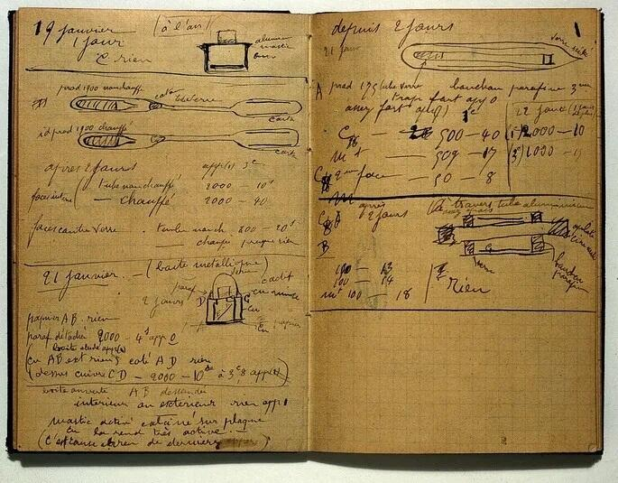
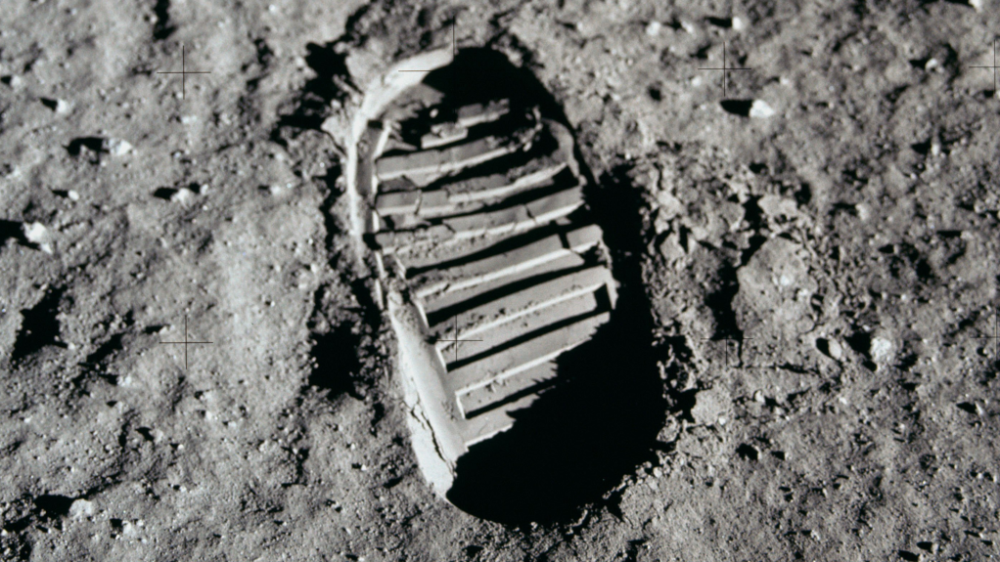
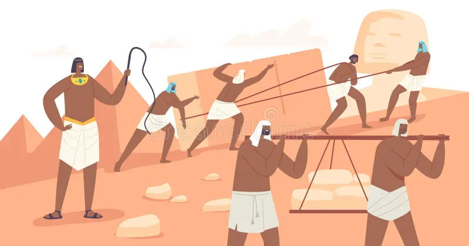
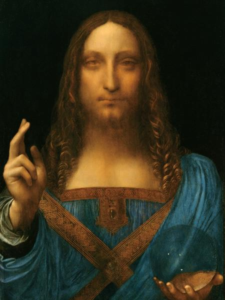
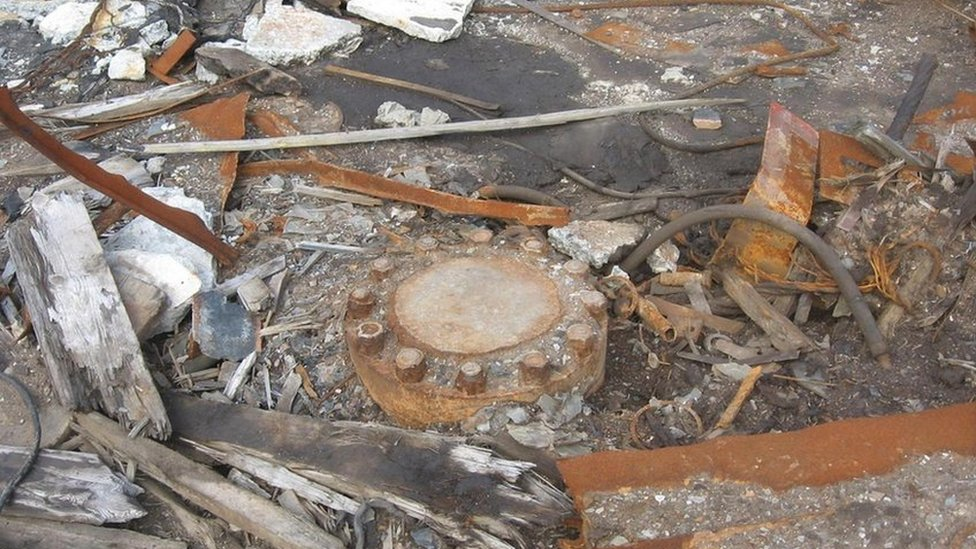
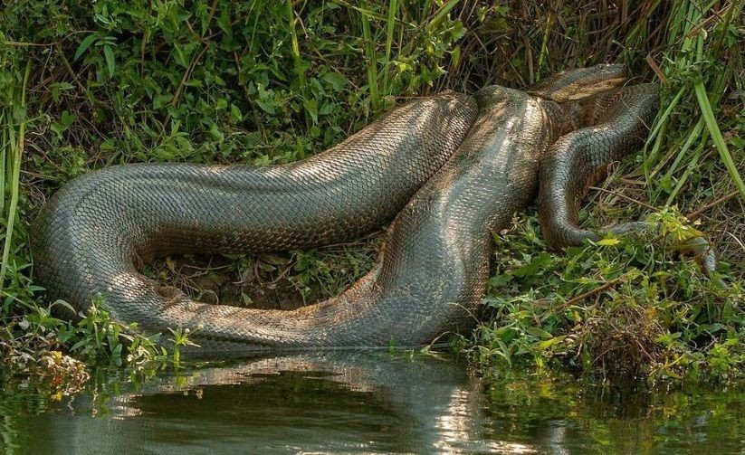

Meu primeiro post
Por: Ketlyn Daiane
Boas-vindas ao meu novo blog! Aqui vou compartilhar dicas de programação e curiosidades da área de tecnologia.
Vou compartilhar conhecimentos sobre tecnologia e programação!
Por: Ketlyn Daiane
Boas-vindas ao meu novo blog! Aqui vou compartilhar dicas de programação e curiosidades da área de tecnologia.

Por: Ketlyn Daiane
Mesmo após mais de um século, os cadernos de Marie Curie continuam altamente radioativos e perigosos devido aos seus experimentos com polônio e rádio, que causaram a sua morte.
Fonte: Computer History Museum

Por: Ketlyn Daiane
As pegadas dos astronautas na Lua continuam intactas décadas depois porque lá não há atmosfera, o que impede a ocorrência de vento ou chuva para apagá-las.
Fonte:NASA History Division

Por: Ketlyn Daiane
As pirâmides do Egito foram construídas por camponeses recrutados, e não por escravos. Eles eram motivados pela fé no faraó e por recompensas como comida e bebida.
Fonte:IoT Analytics

Por: Ketlyn Daiane
A obra de arte mais cara do mundo é Salvator Mundi, de Leonardo da Vinci (1452-1519). Esse quadro foi leiloado em 2017 e arrematado por U$ 450.3 milhões.
Fonte:Primeiro site da Web

Por: Ketlyn Daiane
O Poço Super Profundo de Kola, cavado pelos soviéticos na Guerra Fria com 12,2 km de extensão, tinha o objetivo frustrado de atingir o manto terrestre e hoje está lacrado. Apesar do fim das obras, moradores locais alimentam lendas de que é possível ouvir "vozes do inferno" vindas do buraco.
Fonte:NordPass – Most Common Passwords

Por: Ketlyn Daiane
A maior cobra do mundo é a nossa conhecida sucuri (Eunectes murinus), que vive na América do Sul. Ela pesa em média 220 quilos e mede entre 3 e 6 metros.
Fonte:NASA – Relativity and GPS